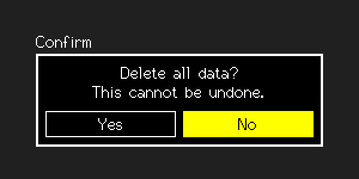

SuperMessageBox
A modal message that restores what it covered.
Editable (modal edit)src/SuperMessageBox.h
What it looks like

Real renders from the library (headless, dark theme, Font2, shown at 2x).
Quick start
SuperMessageBox box(&lcd, 220, &lgfx::fonts::Font2, &Enc, &BtnA, &BtnB);
box.SetMessage("Delete all data?\nThis cannot be undone.");
box.AddButton("Yes"); box.AddButton("No"); box.SetDefault(1);
if (box.BeginEdit()) { int which = box.GetResult(); }Unique features
- Centred on the destination (
SetCentered(false)+SetDisplayPosto place it). Word-wrapped;\nstarts a new line. SetLabel()adds a title.- Puts back the covered pixels like the combo popup:
SetBackdroporSetRestoreon SPI panels.
GUI workflow
Encoder moves between buttons (stops at the ends). A short/long chooses the highlighted one. B short cancels (returns false, result -1). B long moves back to the default button. Touch: tap a button to choose it.
Event workflow
edit contract. OnChange = highlighted button changed; OnAccept = a button was chosen; GetResult() is its index.
Main API
| Call | What it does |
|---|---|
SetMessage(text) | Message |
AddButton(text) | Up to 3 |
SetDefault(i) | Initially highlighted |
GetResult() | Chosen index or -1 |
SetBackdrop / SetRestore | Background restore |
Tips and tricks
TipMake the safe choice the default button.
Pitfalls
Watch outWithout a backdrop on an SPI panel the covered area is not restored correctly.